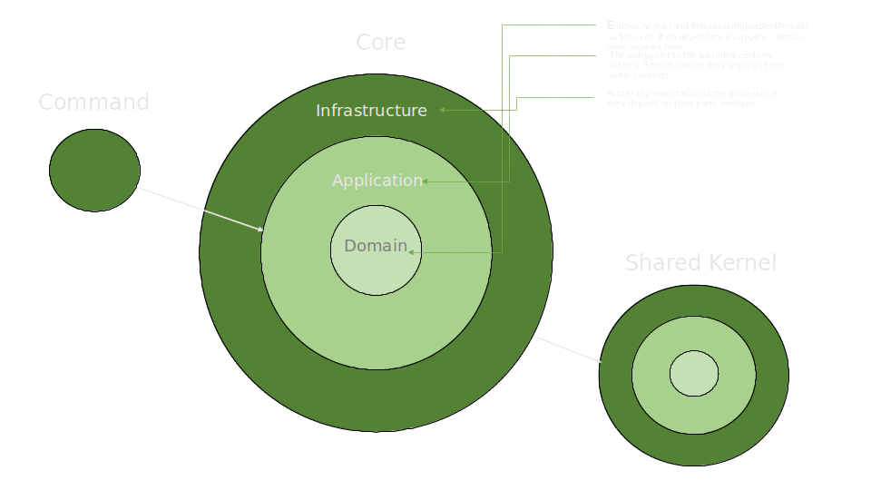

Tackling the technical test as a domain problem
Very recently I found myself searching for other employers as I ended up bored working for my employer. I was able to find a job that suited me after only two interview processes as Barcelona is becoming a huge place for IT industry. This was the first time I was doing interviews that implied fulfilling technical tests so I got invaluable experience on how companies check these tests and what does that mean to me as a potential employee. Here’s my experience.
I did two technical tests on two different companies. Both were searching for a specific role, and allowed to have as much time as needed to fulfill the test. Since I wanted any of these jobs, I tried to do my best on both tests, and given my recent experience on Domain Driven Design I decided to go further and tackle these tests using the principles that i was applying at my current job, using as an example a test that I did for a company that needed a video streamer.
Converting the ‘Problem Space’ into ‘Solution Space’
In most of the cases, the employer provides a problem to solve with a bit of context. Sometimes this context is very well defined and is focused on solving a very specific problem. This is the case for the test that the employer gave me , which demanded an application that imported information from two (or more) different sources onto their own systems. This premise, as well defined as it was, was my interpretation of the Problem Space. The latter is no more than the description of the problem/scenario that we are going to solve in business terms. This space should have business terms,key ideas amd processes that we should translate into implementation, but yet reflect the nature of the problem that we are trying to solve. In our case, we extracted from the Problem space the need of importing information from two video sources to an internal store via a process:
This was the case where the Problem Space was specified properly, but sometimes employers like to give only a few clues about the problem. This is because some employers want you to work develop their Problem Space. This is with the sole purpose to help the business to know if you are good exploring their domain, as well as to know if you can work on a problem without being a business expert. This wasn’t the case, though.
Implementing ‘Solution space’ with terms from the domain
Now that we figured out the problem, it was time to work on the implementation. Big part of what’s the Solution Space is the approach given to solve a problem, which in case of our technical test was just the implementation. My idea of approaching the problem was simple, and my goals on the test were:
- Using Domain Driven Design principles
- Separate the domain actors and its behaviour from the tools used for the test
- Provide an understandable suite of tests to help document the implementation
Eventually I came up with a design like this:

My approach would separate the actual Domain to import the file (for example, checking the extension of the video file) from the implementation of both the import process into the entity (Video) and the persistence mechanism of choice to store the video. These details are in the Infrastructure layer. The triggerer for all this process, will be in the request received in the Application Layer.
The video should create itself as an Entity of the domain, in a domain service. But in case that there’s dependencies on third party modules to import the service, we should use a domain service implemented in infrastructure. This is done using an Infrastructure service whose contract relies on Domain:
Domain/Service/ProcessVideo/ProcessVideoInterface.php
<?php
namespace AppBundle\Core\Domain\Service\ProcessVideo;
use PhpAmqpLib\Message\AMQPMessage;
interface ProcessVideoInterface
{
public function process(AMQPMessage $message);
}
And the implementation goes below (some of the details are trivial, though).
Infrastructure/Service/ProcessVideo/ProcessVideoService.php
namespace AppBundle\Core\Infrastructure\Service\ProcessVideo;
use AppBundle\Core\Domain\Aggregate\Video;
use AppBundle\Core\Domain\Repository\VideoRepositoryInterface;
use AppBundle\Core\Domain\Service\ProcessVideo\ProcessVideoInterface;
use AppBundle\Core\Domain\ValueObject\LabelCollection;
use AppBundle\Core\Domain\ValueObject\Name;
use AppBundle\Core\Domain\ValueObject\Url;
use AppBundle\Core\Infrastructure\DataTransformer\MessageDataTransformer;
use AppBundle\Core\Infrastructure\Service\BuildVideoAggregate\BuildVideoAggregateService;
use AppBundle\SharedKernel\Infrastructure\Service\Output\OutputService;
use PhpAmqpLib\Message\AMQPMessage;
class ProcessVideoService implements ProcessVideoInterface
{
/**
* @var MessageDataTransformer
*/
private $messageDataTransformer;
/**
* @var VideoRepositoryInterface
*/
private $videoRepository;
/**
* @var BuildVideoAggregateService
*/
private $buildVideoAggregateService;
public function __construct(
MessageDataTransformer $messageDataTransformer,
VideoRepositoryInterface $videoRepository,
BuildVideoAggregateService $buildVideoAggregateService
)
{
$this->messageDataTransformer = $messageDataTransformer;
$this->videoRepository = $videoRepository;
$this->buildVideoAggregateService = $buildVideoAggregateService;
}
public function process(AMQPMessage $message)
{
$message = $this->messageDataTransformer->fromAMQPMessage($message)->getBody();
$video = $this->buildVideoAggregateService->build(
$message['labels'],
$message['name'],
$message['url']
);
$this->videoRepository->save($video);
}
}
One of the most important things that companies would expect us to do when doing these tests, is to reflect the nature of the problem and its solution in the code. So before showing off, the implementation should, from my perspective at that time, to use the same “domain terms” they were using to describe. In the case of the snippet above, we do two things:
- interpret the ‘Video’ concept as an aggregate which is comprised with ‘business terms’ with which we can refer to one: labels, name of video and url
$video = $this->buildVideoAggregateService->build(
$message['labels'],
$message['name'],
$message['url']
);
- having a single entrypoint of the service , as a public function whose name is meaningful to the overall domain problem, and reflects the nature of the unit of work: the name ‘process’ was chosen
public function process(AMQPMessage $message)
{
$message = $this->messageDataTransformer->fromAMQPMessage($message)->getBody();
$video = $this->buildVideoAggregateService->build(
$message['labels'],
$message['name'],
$message['url']
);
$this->videoRepository->save($video);
}
Naming the intrinsics of the implementation without exposing too much
Also, in the example above we strive for simplicity and readability. We can assume just by reading the body of the process function which are the intrinsics of processing the input:
- transforming the message from an external source into a more abstract type
$message = $this->messageDataTransformer->fromAMQPMessage($message)->getBody(); - building the ‘Video’ entity with the generic typed message we built earlier
$video = $this->buildVideoAggregateService->build( $message['labels'], $message['name'], $message['url'] ); - and saving the video to a store (whose implementation is not needed to be known) using a repository pattern.
$this->videoRepository->save($video);
This,also, is a form of adhering to the Single Responsibility Principle (from SOLID) and the Composition Over Inheritance postulate.
Back to the intentions: the feedback from the employer
Eventually they deemed my test as good and I got the chance to have an interview with them personally. After some chitty chat where they explained business and the different teams they had, I had a very tiny opportunity to explain my test where I gave a few details, where I explained the reason behind separating implementation from the business (domain). They also liked the fact that the Solution Space was using terms of business, and the representation of the domain in the code. In short, they accepted the technical test as good and they didn’t argue it as either they were ok about my implementation, or they really didn’t valued it much than other aspects.
After some rigurous HR-ey questions that they asked me, they thanked me for my time and I left.
Learnings
Eventually I didn’t get the job. Despite that, I could extract some learnings from this:
-
Companies like to have their ‘sample’ problems solved by approaches that can be as readable as possible, and won’t argue about your implementation. Some companies value equally or even more the explanation of your approach to a problem, rather than magic and shabby/dark implementations, which you might not be able to explain in non technical terms.
-
Using the terms of the domain problem, and separating domain problems from their actual implementation is good, as doing this there’s a door open for better implementations. If an opportunity to explain the domain problem appears, using the same terms as their business is likely to be seen as good.
-
Using this approach made that my technical test for my second employer was worth an offer for joining the company, which I accepted :)
After this, there’s a succint constructive criticism that I got from there:
- Technicality is not all that you’ll need to bring into an interview. Also, good companies search people who is prone to match their team in empathic and assertive terms rather than having PhD’s working with them that are not able to work with more people. This is even as important as technical skills, and the ability to cooperate and relate to colleagues in an empathic key might be key to their business.
The test is here in my github profile for you to check it out or clone it.